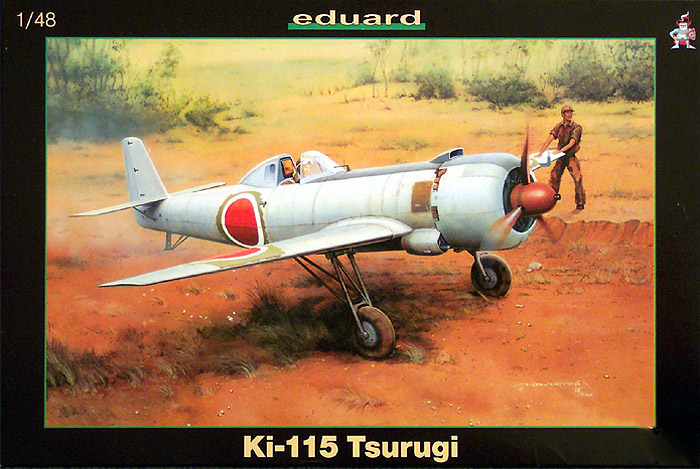
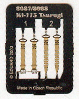
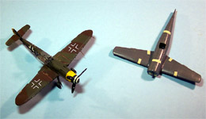
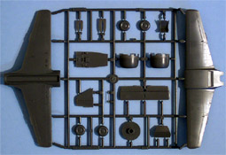
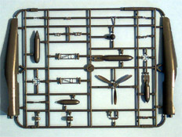
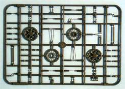
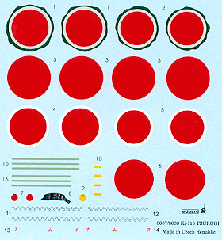

{kind=link}
{kind=link}
{kind=link}
{kind=link}
{kind=link}


Eduard 1/48 Scale Ki-115 Tsurugi (Sword or Sabre)

Kit # 8087 MSRP $49.98 USD
Images and text Copyright � 2004 by Matt Swan
Developmental History
In January 1945, the Japanese Army ordered the Nakajima firm to develop a special attack aircraft armed with a single bomb. A maximum speed of 515 kph (320 mph) was also required but most important, the aircraft had to be simple to build. Flight-testing of the Ki-115 'Tsurugi' (loosely translated as Sword or Sabre) began less than three months after the initial proposal in March 1945. In purpose, this plane was the equivalent of Navy's Ohka for the Army, designed exclusively for Taiatari �special attack� (suicide) missions. An offensive load of one 250, 500, or 800 Kilogram bomb was carried in a recess under the forward fuselage. Designed by Nakajima engineer Aori Kunihiro, the major impetus in building this aircraft was the perceived lack of available obsolete aircraft to use in kamikaze attacks should the Allies invade the home islands.
As completely expendable weapon in character, a very simple structural design was pursued with the outward appearance being quite linear, with a fuselage of thin steel, light alloy wings, and wooden tail it could be mass produced in Japan's aviation cottage industry in provincial towns and cities. The aircraft was designed to be able to accept a number of different power plants. The initial production aircraft (Ki-115a) were powered by 1,150 hp Nakajima Ha-35 radial engines. It is not known if any other engine was ever actually fitted to the aircraft. Steel tubes were used for the main landing gear but each strut was bolted directly to the wing and incorporated simple shock absorbers. The gear was designed to drop after takeoff. Nakajima also added auxiliary flaps to the inboard wing trailing edges and installed fittings beneath each wing for two solid-fuel rockets to boost speed during the final plunge. With these changes, speed jumped to a maximum of 550 kph (343 mph) and range was 1,200 km (720 miles).
The Tsurugi had very poor handling, stability, and take-off and landing performance and could not be flown by anyone other than experienced pilots. The testing department concluded that it was a virtually useless design. Nakajima had already been given the order to urgently mass-produce it and 104 aircraft were ultimately produced. In the end, none of the 104 Ki-115a aircraft produced entered operational service. The war was over and eager volunteers never got to make their final flight. A naval variant and several improved versions did not progress from the drawing board. Little is known of the Tsurugi test program or planned deployment of these aircraft because Nakajima destroyed most records before the Allied forces arrived. The only surviving copy of this unique aircraft was absorbed into the aircraft collection at the Garber Facility of the National Air and Space Museum in 1949.
The Kit

From the moment you touch the box this kit exudes a feeling of quality. The box is made from a heavy duty cardboard with very nice graphics on the cover. On the first glance inside we have another cardboard insert onto which are stapled several small plastic, resealable bags. Inside these bags we have a small fret of colored photo etched seatbelts, a complete set of masks for the canopy and for some of the paint pattern and a small sprue of clear parts (2) for the canopy. Lifting this insert out brings us to the real meat and potatoes of the kit. Next we have two large, resealable bags containing three sprues of parts done in medium gray polystyrene plastic.

All of the parts display very finely engraved panel lines and rivets. I could find no sink marks anywhere on the kit but did find a few injector pin markings. Most of these were on interior areas of the fuselage and do not look to present any problem to construction. The kit does have locator pins but they are very fine and delicate in construction. There are some slight mold lines on the landing gear struts and other smaller pieces but a quick touch of a sanding stick should make short work of them. The sprue gates are all fairly small and most are placed in areas that will not present problems cleaning up other than one located on top of the nose of the fuselage, right across some raised detail. It takes a little care and skill to clean that gate off and retain the kit detail.
As you can see in the size comparison photo this is a small aircraft with a slightly shorter wingspan than the Me-109. I test fit the major components of the kit and was quite pleased with the results. The fuselage pieces lined up well and the wing pieces fit together like a charm. The cockpit is very well detailed and the engine is exceptionally well done also. Eduard has reproduced the attachment points under the wing for the two solid-fuel rockets but failed to include those items as part of the kit. From the looks of preliminary fitting there will be little call for fillers when constructing this kit. You get a choice of arming it with a 500 Kg or an 800 Kg bomb. Overall the kit includes 80 pieces in gray plastic, 2 in clear and 4 PE parts giving the modeler 86 pieces to work with.



You can click on any of the above images to view larger pictures
Decals and Instructions
The instruction booklet for this kit is a very nicely done eight page affair in full color. It is apparent that a lot of thought was put into producing this booklet. The instructions do not include any historical information on the aircraft at all but does include a nice color reference chart. It cross references colors for Gunze Aqueous and Mr. Color as well as Tamiya, Humbrol, Revell and Testors.  We are provided with a complete parts diagram as well. The next six pages cover 9 exploded view construction steps with color call-outs, detail close-up inserts and light blue highlights to areas that need special attention. The last page covers the use of the painting masks. In addition to this there are three full color pages of instructions for decal placement and exterior painting.
The decals provided with the kit allow you to model three different aircraft. The decals exhibit the same level of quality seen though-out the rest of the kit. Color density looks good and print registry is right on the money. Among the standard national markings we also get a set that include the olive drab undercoat that apparently was visible on one aircraft. There are a few service stencils included and an optional decal for the dashboard. There�s even a nice little selection of decals intended for the bomb load. My previous experience with Eduard decals has shown that they respond nicely to setting solutions and I have no reason to believe that these would behave any differently.
Conclusions
Kudos to Eduard for a job well done. They have produced a very nice kit of an unusual aircraft. The level of detail is very nice, the decals are well done and the instructions are top-level work. They did not stop there but continued with a superb job of packaging ensuring that the parts were not likely to take damage in shipping and would survive well in a modelers large stash. Although this aircraft never saw service (thankfully) it is an important piece for a World War 2 collection representing the extremes that some regimes would go to when situations seem beyond hope.